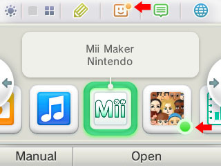
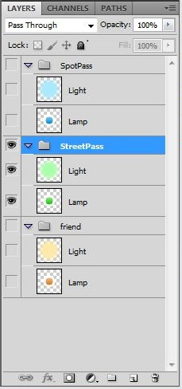
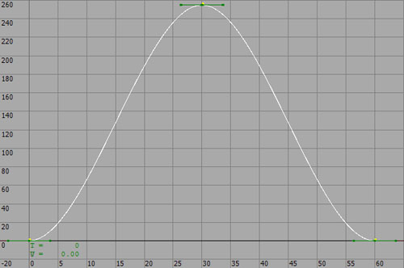

If an update indicator also displays in the application when it is displayed on the HOME Menu, then users can be smoothly guided to the place where the newly arrived data is shown. However, if every application uses its own rules for displaying update indicators, this can confuse users rather than aid them.
For this reason, you should obey the following rules when using update indicators in your applications.
Here, we explain the rules you should follow when discussing specifications and methods for implementing update indicators.
In the following sections we introduce rules for how the various update indicators should behave in the HOME Menu. When discussing the specifications and methods for implementing these update indicators, remember to also adhere to the basic rules laid out above.
Follow these rules when displaying the StreetPass update indicator on application icons in the HOME Menu:
nn::cec::CTR::MessageBox::CloseMessageBox function after calling the nn::cec::CTR::MessageBox::OpenMessageBox function.Follow these rules when displaying the SpotPass update indicator on application icons in the HOME Menu:
nn::boss::GetNewArrivalFlag function, and therefore do not display the update indicator when what has been downloaded in NS data for which the new arrival flag is not set in the server settings.nn::boss::Get*NsDataIdList functions, since the new arrival flag is cleared.boss API Reference Manual and the associated programming manual.Follow these rules when displaying the update indicator for friends on the Friend List icon in the HOME Menu.
As mentioned above, the update indicator for friends in the HOME Menu is not specific to any one application. However, if you will be using update indicators in your application, use them to indicate to users when they can join in with friends (that is, when the nn::friends::FriendPresense::IsJoinable function returns true).
Here, we describe the update indicator image data and the rules for using that image data.
Select which layout to use based on your version of NW4C, as shown in the following table.
| NW4C Version | Layout Data to Use |
|---|---|
| Prior to 3.0 | Data in the folder $CTR_SDK/resources/icon/UpdateIndicator/layout1.The extensions for the layout data are .clan and .clyt. |
| 3.0 or later | Data in the folder $CTR_SDK/resources/icon/UpdateIndicator/layout2.The extensions for the layout data are .flan and .flyt. |
The data have been prepared in the form of a PSD file. Export the data to the appropriate format for your application development environment and implement according to the display rules.
The image data file is located in the following directory in the CTR-SDK.
$CTR_SDK/resources/icon/UpdateIndicator
The layer configuration of the PSD file is as follows.

| Content | Details |
|---|---|
|
Graphics |
Layer Light on top of Lamp. |
|
Animation |
Loop of 60 frames Animate just the opacity of Light.-------------------------------- Frame count Opacity 0 0 30 255 60 0 -------------------------------- |
(Reference)
The animation curve below is provided for reference purposes for creating a blinking animation the same as the HOME Menu.
Refer to this when implementing your animation. (It does not need to be strictly the same.)
The slope should be set to zero as shown in the animation curve.

To indicate the arrival of data for both StreetPass and SpotPass, follow the rules described above and alternate the color between green and blue within the span of 120 frames.
Use cross-fading so that the color of Lamp changes smoothly between green and blue.
As a reference, view the following video clip.
$CTR_SDK/documents/resources/UpdateIndicator/img/StreetPass_SpotPass.avi
You are free to adjust the size of the update indicator, providing you display it within a reasonable range that is not too large or too small.
Icons cannot be modified. Do not switch to the use of original colors or make changes to the pattern.
CONFIDENTIAL